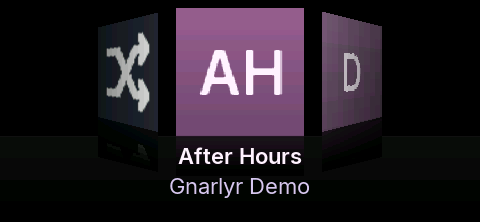
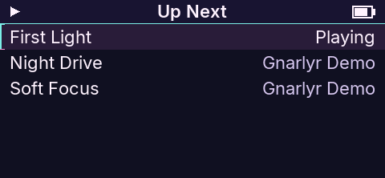
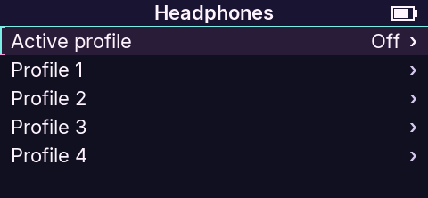

Find the album.
Covers, search and Smart Lists bring your collection closer.
Firmware features
Find music, enjoy gapless albums, save a mix and make the controls your own. Browse features by task, then explore the fixes behind them. Gnarlyr builds on Podium and EchoPod.

Covers, search and Smart Lists bring your collection closer.

Edit Up Next, then save a play order for another day.

Keep trim, balance and a volume ceiling for each pair.
Gnarlyr gives the full-size ECHO more ways to browse, build a listening session and set up the player. These additions build on Podium and EchoPod.
The comparison uses FiiO ECHO 2.0.0. Stock already provides M3U playlists, song favorites, EQ, gain and five DAC filters, Bluetooth and USB DAC mode. Gnarlyr extends how you use those capabilities.
Browse albums, search for a song or narrow a long list. Personal labels help organize music without editing the files.
echo-sync tool.
Gapless playback joins tracks without adding a pause, so a live album or continuous mix keeps flowing. Compatible tracks need the same sample rate. Gnarlyr builds on playback support from Podium and EchoPod.
Up Next is your current play order. Save it as a named mixtape to return to it later. Changing Up Next leaves the saved mix alone until you save over it.
Adjust the sound while music plays, follow the lyrics and see what you listen to most.
.scrobbler.log for other listening tools. See progress while it saves, cancel with Back and read the number of plays exported. Plays made while the clock is set include UTC timestamps.
An M4B file can hold a whole audiobook and its chapters. Gnarlyr puts books on their own shelf and remembers where you stopped.
echo-sync both preserve M4B chapters, without adding a duplicate whole-book track.Use M4A or M4B files containing AAC-LC or Apple Lossless (ALAC) audio. HE-AAC and xHE-AAC are not supported; the filename alone does not identify the audio inside.
For speech recordings, use 32, 44.1 or 48 kHz files. Convert lower-rate recordings before copying them; the developer audio guide explains the conversion path.
Chapter indexing reads Nero chapter lists and QuickTime chapter tracks, with up to 255 chapters per book. A book without readable chapter information remains a whole-book track.
Rescan on the player or run echo-sync after adding books or changing chapter information. A rescan also applies audiobook recognition to an existing library.
Choose a readable layout, assign button shortcuts and use the interface in your preferred language.
Use the ECHO as a player, a USB drive or a USB audio (DAC) for your computer’s audio. Switch USB modes without removing the cable.
These changes improve Gnarlyr and the code it inherits. They help keep playback, saved state and the interface in step. See what we learned about the cores, DMA, memory and output hardware.
Files can contain damaged or contradictory information. These checks reject invalid data before it is used to locate or decode audio.
DAC startup and MP3/AAC timing fixes improve inherited playback code.
Everyday updates use the player’s updater. Developer builds add a computer-assisted loop for copying, checking, ejecting and restarting.
Meet the desktop companion for music and player care →
Stay offline. Get a little gnarly.
Made for the music you already love.